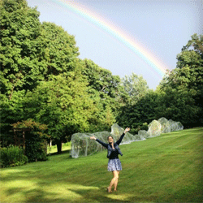

Home About Me Brands A-Z Restaurants What I've Learned Get Connected
|
Welcome!My name is Madeleine Schwartz and this is where I get to tell my story. I've written about my gluten-free journey in a way that is so fascinating even people leading gluten-filled lives will enjoy it.

|